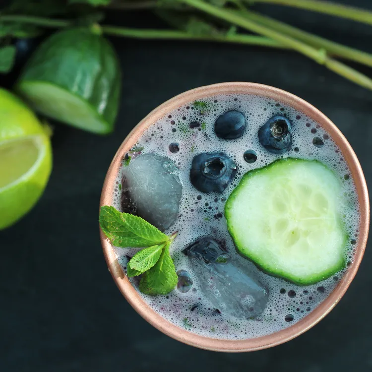

Summertime Mule Recipe
Back

Description
Vodka and ginger beer mingle with summery flavors for a crisp and refreshing cocktail to enjoy on hot days.
This summertime mule recipe pairs nicely with crunchy raw veggies for an aperitivo outdoors.
Ingredients:
Cocktail:
- ice
- 5 fresh mint leaves
- 1 (1 ½-inch) piece English cucumber, diced
- ¼ cup fresh blueberries
- ½ lime, cut into 2 wedges
- 2 fluid ounces vodka (such as Tito's)
- ½ cup ginger beer (such as Fentimans)
Garnish:
- 3 fresh blueberries
- 2 fresh mint leaves
- 1 slice cucumber
- ½ teaspoon dried sage
- ½ teaspoon ground cinnamon
- ½ teaspoon ground ginger
- ¼ teaspoon freshly grated nutmeg
- ¼ teaspoon ground allspice
- ¼ teaspoon ground mustard
- ⅛ teaspoon ground cloves
- 1 pinch cayenne pepper
Directions
- Fill a copper cup or mug with ice. Set aside.
- Mash 5 mint leaves in a cocktail shaker with a cocktail muddler. Add diced cucumber, ¼ cup blueberries,
and 2 lime wedges; mash with the cocktail muddler until cucumber and blueberries are crushed and limes are juiced.
Add ice and vodka; cover and shake until the outside of the shaker has frosted.
Strain cocktail into the iced-filled copper cup; top with ginger beer.
- Garnish cocktail with 3 blueberries, 2 mint leaves, and cucumber slice.